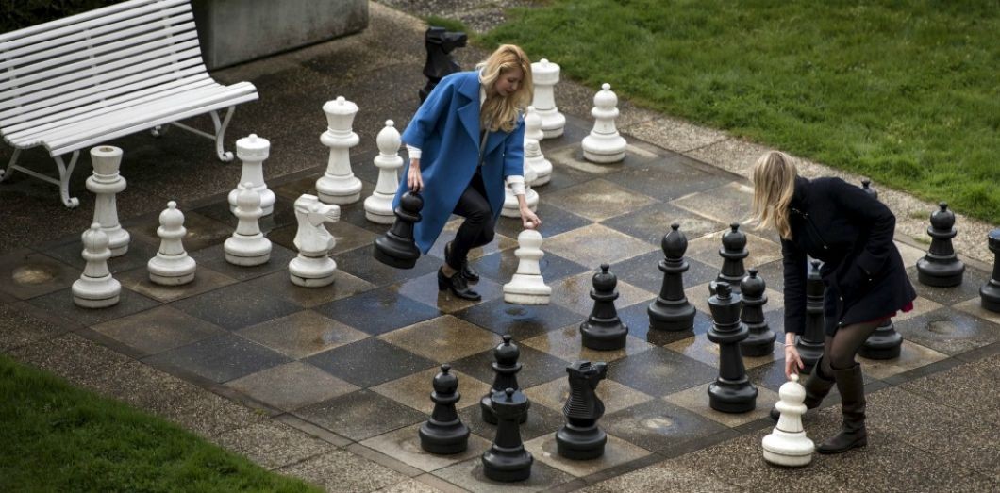

Serious Gaming

Définition
« Tout jeu dont la finalité première est autre que le simple divertissement »
Jeu Sérieux oxymore ?
Le jeu est un moteur naturel d'apprentissage...

Qui procure de la dopamine et optimise les facultés d'attention
Concept de gamification
- par une forme (puzzles, jeu de rôles, simulation...)
- par une interactivité (implication)
- par des règles (dimension sérieuse)
- par des objectifs ludiques (récompense)
Rendre attrayant du contenu :
Histoire
Les premiers jeux considérés comme sérieux

Le Kriegspiel, jeu sérieux utilisé par l'armée prussienne pour former leurs commandants, 18è siècle

America's Army, série de jeux commencée en 2000 pour promouvoir l'armée américaine
Serious Gaming
Le terme est utilisé pour la 1e fois en 1970 par Clark Abt. Avec le développement de l'informatique, il perd son sens lié aux simples jeux pour définir maintenant les jeux informatisés :
- traitement des données plus efficace
- meilleure sensation d'immersion
- possibilité de pratiquer à distance
Types de serious game
3 types de fonctions utilitaires selon Juan Alvarez:
- Diffuser un message
- Dispenser un entraînement
- Favoriser l'échange de données
- Pour qui ? cible
- Pourquoi ? but
- Comment ? moyen
Diffuser un message
- Ludo-éducatif
- Jeux engagés
- Edumarket
- Jeux publicitaires
Diffuser un message
Les éonautes, Almédia, 2012
- écoliers
- apprentissage du français
- jeu éducatif, puzzles / rébus
Ludo-éducatif
Diffuser un message
Classcraft, Shawn Young, 2013
- collégiens, lycéens
- gamifier le contenu éducatif
- plateforme JDR en ligne
Ludo-éducatif
Diffuser un message
Darfur is Dying, 2006
- grand public
- sensibilisation vie pays pauvres
- jeu en ligne, gestion / survie
Jeu engagé
Dispenser un entraînement
- Cognitif
- Physique
Dispenser un entraînement
Dr Kawashima, Nintendo, 2020
- grand public
- entraîner mémoire, logique
- jeu vidéo puzzles / classiques
Cognitif
Dispenser un entraînement
Hammer & Planks, NaturalIpad, 2013
- patients atteints de Parkinson
- rééduquer la mobilité
- jeu vidéo motion capture
Physique
Favoriser l'échange de données
Echange de données
Foldit, Washington University, 2008
- grand public
- biosynthèse des protéines
- plateforme en ligne, puzzles
But scientifique
Projets d'actualité
Reality Academy
Virdys Studio
Immersive Factory
Conclusion
Longtemps laissés de côté à cause d'un manque d'investissement et d'une immersion réaliste, les serious games sont en pleine expansion grâce à la démocratisation des nouvelles technologies telles que la Réalité Virtuelle et la Réalité Augmentée. Les entreprises, centres de formation et établissements scolaires s'y intéressent de plus en plus pour leurs capacités d'apprentissage.
Références
- « Apprendre avec les serious games ! » Julian Alvarez
- « The gamification of learning and instruction fieldbook » Karl Kapp, Lucas Blair & Rich Mesch
- Cours sur le Serious gaming, Coursera
- Les Eonautes : https://www.youtube.com/watch?v=Rx8-7Ezivzg
- Dr Kawashima : https://www.youtube.com/watch?v=oatFn6toDAs
- Classcraft : https://www.youtube.com/watch?v=u57yDIIeNC4
- Hammer & Planks : https://www.youtube.com/watch?v=NXTer-ZltsI
- Darfur is Dying : https://www.youtube.com/watch?v=gehaZkV8034
- Foldit : https://www.youtube.com/watch?v=bo99JjnfdA8
- Reality Academy : https://www.youtube.com/watch?v=yJNjcenn_70&feature=emb_logo
- Virdys : https://www.youtube.com/watch?v=a1SZOpKZbE4
- Immersive : https://www.youtube.com/watch?v=9tvVxSTQC-Y